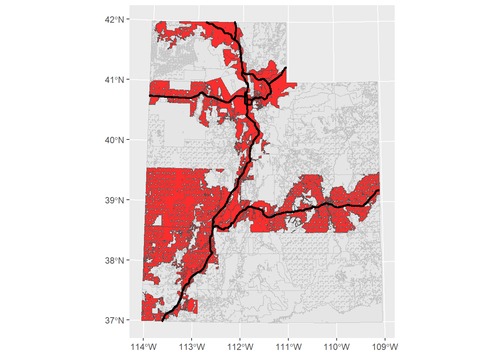
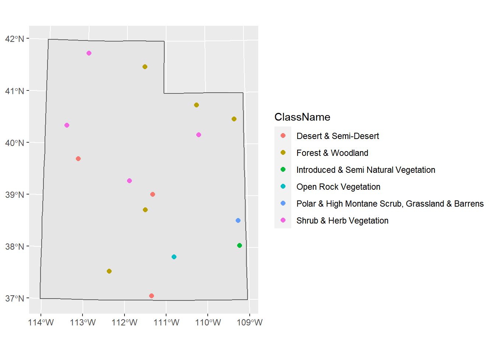

Chapter 4 Spatial Analysis
Now let’s do some analysis with the data we’ve acquired already:
- Sites point data
sites_sf - Utah freeways
fwy_sf_proj
We also have some data that I’ve included in the exercises portion of the “worksheet”: a different elevation + snow raster stack (this one is in the NW corner of Utah), a set of plots as a point feature, and a polygon feature of land management boundaries in Utah:
elev_snow_stk## class : RasterStack
## dimensions : 7401, 5606, 41490006, 3 (nrow, ncol, ncell, nlayers)
## resolution : 30, 30 (x, y)
## extent : 414639.5, 582819.5, 4428230, 4650260 (xmin, xmax, ymin, ymax)
## crs : +proj=utm +zone=12 +datum=NAD83 +units=m +no_defs
## names : elevation, swe, snow_depth
## min values : 1279.897, 0.000, 0.000
## max values : 4111.6, 1108.0, 3196.0plot(elev_snow_stk)head(plots_sf)## Simple feature collection with 6 features and 1 field
## Geometry type: POINT
## Dimension: XY
## Bounding box: xmin: 499102.7 ymin: 4528029 xmax: 560979.8 ymax: 4622779
## Projected CRS: NAD83 / UTM zone 12N
## Plots geometry
## 1 A POINT (537889.7 4593484)
## 2 B POINT (560979.8 4586311)
## 3 C POINT (544094.8 4548330)
## 4 D POINT (522850.5 4556870)
## 5 E POINT (551238.5 4528029)
## 6 F POINT (499102.7 4622779)manage_sf <- st_read("data/Exercises/UT_land_management", "UT_land_management",
quiet = T) %>%
st_transform(crs = 26912)## Simple feature collection with 6 features and 5 fields
## Geometry type: MULTIPOLYGON
## Dimension: XY
## Bounding box: xmin: 388066 ymin: 4410117 xmax: 403492.2 ymax: 4414856
## Projected CRS: NAD83 / UTM zone 12N
## OBJECTID OWNER AGENCY ADMIN DESIG geometry
## 1 1 Federal BLM BLM Bankhead Jones MULTIPOLYGON (((388854 4411...
## 2 2 Federal BLM BLM Bankhead Jones MULTIPOLYGON (((394528.1 44...
## 3 3 Federal BLM BLM Bankhead Jones MULTIPOLYGON (((388473.6 44...
## 4 4 Federal BLM BLM Bankhead Jones MULTIPOLYGON (((399793.3 44...
## 5 5 Federal BLM BLM Bankhead Jones MULTIPOLYGON (((389300.1 44...
## 6 6 Federal BLM BLM Bankhead Jones MULTIPOLYGON (((403492.2 44...Let’s plot one of the rasters with our sites point vector and Utah highways line vector. To plot just one raster layer in a stack we can either index it with double brackets or with the name:
# these are different ways to get the same raster layer
elev_snow_stk[[1]]## class : RasterLayer
## band : 1 (of 3 bands)
## dimensions : 7401, 5606, 41490006 (nrow, ncol, ncell)
## resolution : 30, 30 (x, y)
## extent : 414639.5, 582819.5, 4428230, 4650260 (xmin, xmax, ymin, ymax)
## crs : +proj=utm +zone=12 +datum=NAD83 +units=m +no_defs
## source : elev_snow_nw_stack.tif
## names : elevation
## values : 1279.897, 4111.6 (min, max)elev_snow_stk$elevation## class : RasterLayer
## band : 1 (of 3 bands)
## dimensions : 7401, 5606, 41490006 (nrow, ncol, ncell)
## resolution : 30, 30 (x, y)
## extent : 414639.5, 582819.5, 4428230, 4650260 (xmin, xmax, ymin, ymax)
## crs : +proj=utm +zone=12 +datum=NAD83 +units=m +no_defs
## source : elev_snow_nw_stack.tif
## names : elevation
## values : 1279.897, 4111.6 (min, max)## Reading layer `utah_freeway' from data source
## `C:\Users\Ronan\Box\Ecology Center\R_Spatial_bookdown\Data\Examples\utah_freeway'
## using driver `ESRI Shapefile'
## Simple feature collection with 1849 features and 7 fields
## Geometry type: LINESTRING
## Dimension: XY
## Bounding box: xmin: -114.0437 ymin: 37.00002 xmax: -109.0513 ymax: 42.00117
## Geodetic CRS: WGS 84plot(elev_snow_stk$elevation)
plot(st_geometry(fwy_sf_proj), lwd = 2, add = TRUE) # add = TRUE will add other elements to the plot without erasing previous elements and creating a new plot
plot(st_geometry(sites_sf_proj), pch = 16, add = TRUE)
plot(st_geometry(plots_sf), pch = 3, add = TRUE)(This can also be done with ggplot using as.data.frame but in this case the raster may be too large for R to convert to a dataframe and plot)
Let’s start on some analysis and computations that we can run on these data.
4.1 Selecting Attributes
Perhaps you have vector data and you want to select only certain attributes or attributes that reach a focal threshold. To do so we need to set up a logical statement, and we can do this in base R or in tidyverse.
Let’s say we want to select boundaries that are operated by BLM. In the shapefile of management boundaries, this information is located in the column “AGENCY”
unique(manage_sf$AGENCY)## [1] "BLM" "BR" "DOD" "DOE" "NPS" "USFS" "USFWS"
## [8] "Private" "DNR" "OS" "SITLA" "UDOT" "Tribal"In base R we can use the function which and in tidyverse we can use the function filter
# base R
blm_boundary <- manage_sf[which(manage_sf$AGENCY == "BLM"), ]
# tidyverse
blm_boundary <- manage_sf %>%
filter(AGENCY == "BLM")
ggplot() +
geom_sf(data = manage_sf, col = "grey", size = 0.1) +
geom_sf(data = blm_boundary, fill = "red", col = "grey30",
alpha = 0.8, size = 0.1)Using these functions, you can set up any logical statement using ==, %in%, >, >=, <, <=, or ! and select for the specific attributes you need.
4.2 Select features by location
Let’s make select the management boundaries based on if they are intersected by a major highway. For sf we’ll use the function st_intersect
manage_roads <- st_intersects(fwy_sf_proj, manage_sf) # the first argument is the target shape and the second argument the shape we're selecting from
class(manage_roads)## [1] "sgbp" "list"The output is an sgbp object, or “Sparse Geometry Binary Predicate”. Basically it returns a list of vectors of integers, which refer to the indices of each polygon that intersects.
dim(manage_roads)## [1] 1849 14888nrow(fwy_sf_proj)## [1] 1849nrow(manage_sf)## [1] 14888So the dimensions of this list are the the number of rows in the target shape (the highways) and the number of rows in the intersecting shape (the management boundaries).
Lets look at the first five elements of this list:
manage_roads[1:5]## [[1]]
## [1] 6459
##
## [[2]]
## [1] 6455
##
## [[3]]
## [1] 6449
##
## [[4]]
## [1] 6449
##
## [[5]]
## [1] 6443This means that the 1st row of the road polyline intersects with the 6459th row of the management polygon, the 2nd row of the road polyline intersects with the 6455th row of the management polygon, and etc.
If we wanted to know the specifc index of a specific road that intersected with a management boundary, it would be useful to keep all of these indices seperate. Since we just want to know which boundaries intersect a road, we can collapse this whole list together.
manage_roads_index <- unique(unlist(manage_roads)) # just pull the unique indices
manage_roads_intersect <- manage_sf[manage_roads_index, ]
ggplot() +
geom_sf(data = manage_sf, col = "grey", size = 0.1) +
geom_sf(data = manage_roads_intersect, fill = "red", col = "grey30",
alpha = 0.8, size = 0.1) +
geom_sf(data = fwy_sf_proj, col = "black", size = 1)
If you look at the help file for ?st_intersects, you’ll see there are a lot of different functions that select features based on another feature.
4.3 Joining Attributes
Let’s load in a table of some data collected at each plot
## Plots Species Date AboveGroundBiomass MeanHeight PercentCover
## 1 A R. maritimus 2021-05-01 27.61158 3.7257421 77.75151
## 2 A B. cernua 2021-05-01 13.18637 4.5355917 65.06243
## 3 A S. acutus 2021-05-01 68.84413 1.8172373 98.39445
## 4 B R. maritimus 2021-05-02 59.58161 1.2949173 28.84727
## 5 B B. cernua 2021-05-02 87.44708 0.7372426 48.40372
## 6 B S. acutus 2021-05-02 35.32842 2.6436731 95.73950Let’s join this table to the Plots feature so we could do some spatial analysis and mapping of the collected data. To join two tables together, we need to input the two tables and the name of the column that exists in both tables (so the join function knows how to match attributes together). In this case, that would be the Plots column.
head(plots_sf$Plots)## [1] "A" "B" "C" "D" "E" "F"head(plot_data$Plots)## [1] "A" "A" "A" "B" "B" "B"We can use the tidyverse’s join functions. (If you don’t know how joins work, I would recommend looking at the help file by typing ?left_join in the console)
plots_join <- left_join(plots_sf, plot_data, by = "Plots")
head(plots_join)## Simple feature collection with 6 features and 6 fields
## Geometry type: POINT
## Dimension: XY
## Bounding box: xmin: 537889.7 ymin: 4593484 xmax: 537889.7 ymax: 4593484
## Projected CRS: NAD83 / UTM zone 12N
## Plots Species Date AboveGroundBiomass MeanHeight PercentCover
## 1 A R. maritimus 2021-05-01 27.61158 3.7257421 77.75151
## 2 A B. cernua 2021-05-01 13.18637 4.5355917 65.06243
## 3 A S. acutus 2021-05-01 68.84413 1.8172373 98.39445
## 4 A R. maritimus 2021-05-08 42.73997 0.5477968 65.87027
## 5 A B. cernua 2021-05-08 68.90326 1.9793263 11.35618
## 6 A S. acutus 2021-05-08 44.42221 0.4002126 90.92433
## geometry
## 1 POINT (537889.7 4593484)
## 2 POINT (537889.7 4593484)
## 3 POINT (537889.7 4593484)
## 4 POINT (537889.7 4593484)
## 5 POINT (537889.7 4593484)
## 6 POINT (537889.7 4593484)Great! At this point you could then do some spatial analysis based on location, or make a map based on average biomass, for example. However, that’s outside the scope of this workshop.
Joining two tables together is a valuable tool to know, not just for GIS but for any data management.
4.4 Extract Raster Values
What if we need to get data from our rasters at our specific site locations? We can use the function extract().
Let’s load a landcover raster so we can classify the habitat types of our sites
landcover <- raster("Data/Examples/landcover.tif")
landcover## class : RasterLayer
## dimensions : 18675, 14838, 277099650 (nrow, ncol, ncell)
## resolution : 30, 30 (x, y)
## extent : 229319.6, 674459.6, 4094414, 4654664 (xmin, xmax, ymin, ymax)
## crs : +proj=utm +zone=12 +datum=NAD83 +units=m +no_defs
## source : landcover.tif
## names : landcover
## values : 137, 584 (min, max)plot(landcover)
plot(st_geometry(sites_sf_proj), pch = 16, add = T)extract returns a vector whose indices match the indices of the spatial object. We could leave it as a vector, or we could automatically attach it to the dataframe using $
sites_sf_proj$land_value <- raster::extract(landcover, sites_sf_proj)(Note that I put raster:: in front of extract(), that’s because there are multiple packages that have a function called extract(), so we want to specify to R which pacakage we want)
sites_sf_proj## Simple feature collection with 15 features and 2 fields
## Geometry type: POINT
## Dimension: XY
## Bounding box: xmin: 287581.9 ymin: 4104593 xmax: 656513.7 ymax: 4624671
## Projected CRS: NAD83 / UTM zone 12N
## First 10 features:
## Site geometry land_value
## 1 1 POINT (516801.7 4188305) 547
## 2 2 POINT (470663.6 4322073) 491
## 3 3 POINT (656513.7 4212358) 561
## 4 4 POINT (311534.1 4398520) 498
## 5 5 POINT (454023.6 4595255) 187
## 6 6 POINT (455210.1 4289185) 151
## 7 7 POINT (420826.5 4351553) 457
## 8 8 POINT (564670.6 4513862) 152
## 9 9 POINT (287581.9 4469956) 458
## 10 10 POINT (377495.7 4157301) 158Ok, but what do these numbers mean? Our landcover raster is a categorical raster, so these numbers aren’t actually real numbers but represent a habitat type. Fortunately we have a dataframe indicating what these numbers mean.
land_info <- read.csv("Data/Examples/landcover_info.csv")
head(land_info)[,1:5]## Value ClassCode ClassName SubClassCode SubClassName
## 1 1 1 Forest & Woodland 1.A Tropical Forest & Woodland
## 2 2 1 Forest & Woodland 1.A Tropical Forest & Woodland
## 3 3 1 Forest & Woodland 1.A Tropical Forest & Woodland
## 4 4 1 Forest & Woodland 1.A Tropical Forest & Woodland
## 5 5 1 Forest & Woodland 1.A Tropical Forest & Woodland
## 6 6 1 Forest & Woodland 1.A Tropical Forest & WoodlandThe column “Value” corresponds to the cell value we extracted from the raster. We can use what we learned earlier how to join two tables together. In our previous example, the columns we used to join the tables together were named the same. In this case, they’re not: one is called “land_value” and one is called “Value”. We could rename them so that they match. But left_join() has a way of handling and matching columns, even if they’re not named the same. If we check ?left_join, in the “Arguments” section for by, it says “to join by different variables on x and y, use a named vector. For example, by = c("a" = "b") will match x$a to y$b.” So we just need to set by = c("land_value" = "Value")
sites_sf_land <- sites_sf_proj %>%
left_join(land_info, c("land_value" = "Value"))
head(sites_sf_land)[,1:6]## Simple feature collection with 6 features and 6 fields
## Geometry type: POINT
## Dimension: XY
## Bounding box: xmin: 311534.1 ymin: 4188305 xmax: 656513.7 ymax: 4595255
## Projected CRS: NAD83 / UTM zone 12N
## Site land_value ClassCode ClassName SubClassCode
## 1 1 547 6 Open Rock Vegetation 3.B
## 2 2 491 3 Desert & Semi-Desert 3.B
## 3 3 561 9 Introduced & Semi Natural Vegetation 9.A
## 4 4 498 3 Desert & Semi-Desert 3.B
## 5 5 187 1 Forest & Woodland 1.B
## 6 6 151 1 Forest & Woodland 1.B
## SubClassName geometry
## 1 Cool Semi-Desert Scrub & Grassland POINT (516801.7 4188305)
## 2 Cool Semi-Desert Scrub & Grassland POINT (470663.6 4322073)
## 3 Introduced & Semi Natural Vegetation POINT (656513.7 4212358)
## 4 Cool Semi-Desert Scrub & Grassland POINT (311534.1 4398520)
## 5 Temperate & Boreal Forest & Woodland POINT (454023.6 4595255)
## 6 Temperate & Boreal Forest & Woodland POINT (455210.1 4289185)
Awesome! Now we know what habitat each of our sites reside in.
4.5 Distance
Let’s say we needed to know how far from a major road each of our sites are. We’ll use the function st_distance for our sf objects. We simply need to input the focal feature (the sites) and the feature
dist <- st_distance(sites_sf_proj, fwy_sf_proj)
dim(dist)## [1] 15 1849What did this do? Why are there so many columns? Remember that our Utah highways feature is a polyline, meaning it’s a line of lines. If we look at the dimensions of the highways feature:
nrow(fwy_sf_proj)## [1] 1849There are 1849 lines (i.e. roads) that make up this whole feature. So st_distance found the distance for each site (the number of rows) for every road (the number of columns). This could be useful information, but presumably we want just the distance of the closest road. Let’s first use st_nearest_feature to find the closest road to each of our sites.
near_road <- st_nearest_feature(sites_sf_proj, fwy_sf_proj)
near_road## [1] 139 49 1183 1749 111 422 552 1236 786 1725 866 1632 1235 1789 1183fwy_sf_proj[near_road,]## Simple feature collection with 15 features and 7 fields
## Geometry type: LINESTRING
## Dimension: XY
## Bounding box: xmin: 259156.6 ymin: 4191682 xmax: 668287.6 ymax: 4651339
## Projected CRS: NAD83 / UTM zone 12N
## First 10 features:
## OBJECTID FULLNAME NAME POSTTYPE SPEED_LMT UNIQUE_ID
## 139 29109 I-70 EB FWY I-70 EB FWY 75 12SWH795644729_I-70 EB_FWY
## 49 11531 I-70 WB FWY I-70 WB FWY 75 12SVH54839499_I-70 WB_FWY
## 1183 251055 I-70 EB FWY I-70 EB FWY 75 12SXJ29161112_I-70 EB_FWY
## 1749 370330 I-15 SB FWY I-15 SB FWY 75 12SVJ06965812_I-15 SB_FWY
## 111 23828 I-15 NB FWY I-15 NB FWY 65 12TVL12119352_I-15 NB_FWY
## 422 85982 I-70 EB FWY I-70 EB FWY 75 12SVH54609503_I-70 EB_FWY
## 552 114417 I-15 NB FWY I-15 NB FWY 75 12SVJ06495248_I-15 NB_FWY
## 1236 261732 I-80 EB FWY I-80 EB FWY 75 12TVL93086448_I-80 EB_FWY
## 786 163578 I-80 EB FWY I-80 EB FWY 75 12TTL83931218_I-80 EB_FWY
## 1725 366067 I-15 NB FWY I-15 NB FWY 65 12SUG39329184_I-15 NB_FWY
## Shape__Len geometry
## 139 6313.6949 LINESTRING (501467.1 429944...
## 49 25339.8240 LINESTRING (451479.6 430335...
## 1183 22123.4009 LINESTRING (620558.6 431124...
## 1749 10301.8918 LINESTRING (406729.3 435416...
## 111 847.6180 LINESTRING (412098.9 459321...
## 422 24825.7352 LINESTRING (451472.2 430330...
## 552 3780.5714 LINESTRING (406210.8 435105...
## 1236 10483.0273 LINESTRING (491047.8 456117...
## 786 65407.7733 LINESTRING (259156.6 451364...
## 1725 595.1667 LINESTRING (339154.3 419168...Now we have the indices of the roads that are closest to our sites, so we can find the distance of just these roads.
dist_near_road <- st_distance(sites_sf_proj, fwy_sf_proj[near_road,])
dist_near_road[, 1:5]## Units: [m]
## [,1] [,2] [,3] [,4] [,5]
## [1,] 111639.22 115156.425 160869.50 199057.70 418229.34
## [2,] 38224.11 26693.741 150285.83 71534.76 277396.29
## [3,] 174084.35 208821.328 100145.04 287228.78 452539.69
## [4,] 214222.37 169238.640 321112.90 103257.14 219135.01
## [5,] 299594.45 291914.127 329236.81 238021.59 41943.65
## [6,] 47380.39 4153.164 166813.37 81069.68 307073.34
## [7,] 96013.51 57122.399 203759.33 14336.38 241821.38
## [8,] 221639.27 238987.560 210186.43 218026.31 171974.51
## [9,] 273536.65 233707.943 368867.75 162447.94 175207.56
## [10,] 188607.07 156625.451 287710.95 199018.77 437287.03
## [11,] 162543.66 187841.119 148034.96 183109.32 212418.35
## [12,] 197634.39 185366.284 256627.10 257073.93 491856.29
## [13,] 365762.29 342083.273 424603.72 273413.08 83841.36
## [14,] 230482.17 264671.131 173229.70 266273.67 257345.82
## [15,] 150861.64 192013.022 47122.16 261637.00 406153.16dim(dist_near_road)## [1] 15 15This is still giving us the distance of each road to each site but we just want the distance between each site and it’s nearest road. There’s an argument in st_distance() called by_element that tells st_distance() to only find the distance between the first elements of the two objects.
dist_near_road <- st_distance(sites_sf_proj, fwy_sf_proj[near_road,],
by_element = TRUE)
dist_near_road## Units: [m]
## [1] 111639.222 26693.741 100145.037 103257.143 41943.649 4125.821
## [7] 14283.745 86312.191 41938.755 51488.234 123300.966 155219.714
## [13] 29553.171 145427.114 47122.155There we go! Now we have the distance between each site and it’s nearest road. This output is a vector, so we can add it to our sites data frame with $ (or mutate() in tidyverse)
sites_sf_proj$dist_near_road <- dist_near_road
head(sites_sf_proj)## Simple feature collection with 6 features and 3 fields
## Geometry type: POINT
## Dimension: XY
## Bounding box: xmin: 311534.1 ymin: 4188305 xmax: 656513.7 ymax: 4595255
## Projected CRS: NAD83 / UTM zone 12N
## Site geometry land_value dist_near_road
## 1 1 POINT (516801.7 4188305) 547 111639.222 [m]
## 2 2 POINT (470663.6 4322073) 491 26693.741 [m]
## 3 3 POINT (656513.7 4212358) 561 100145.037 [m]
## 4 4 POINT (311534.1 4398520) 498 103257.143 [m]
## 5 5 POINT (454023.6 4595255) 187 41943.649 [m]
## 6 6 POINT (455210.1 4289185) 151 4125.821 [m]sites_sf_proj <- sites_sf_proj %>%
mutate(dist_near_road = dist_near_road)(Note that if you look at the help file i.e. ?st_distance, there are other functions to calculate geometric measurements for sf objects: st_area and st_length)
4.6 Calculate Terrain Characteristics
From a DEM (digital elevation model) we can obtain a lot of other rasters that are likely useful in GIS research. The elevation raster we’ve been working with is a DEM. From a DEM we can derive other terrain characteristics :
- Slope: Measurement of “steepness”
- Aspect: Measurements of “Northness” and “Eastness”
- Flow direction of water: the direction of the greatest drop in elevation
- Terrain Ruggedness Index (TRI): the mean of the absolute differences between the value of a cell and the value of its 8 surrounding cells
- Topographic Position Index (TPI): the difference between the value of a cell and the mean value of its 8 surrounding cells
- Roughness: the difference between the maximum and the minimum value of a cell and its 8 surrounding cells
These definitions came from the help file for the function we can use to derive these characteristics: terrain().
slope <- terrain(elev_snow_stk$elevation, opt = "slope", unit = "radians")
aspect <- terrain(elev_snow_stk$elevation, opt = "aspect", unit = "radians")
roughness <- terrain(elev_snow_stk$elevation, opt = "roughness")
terrain_stk <- stack(elev_snow_stk$elevation, slope, aspect, roughness)
terrain_stk## class : RasterStack
## dimensions : 7401, 5606, 41490006, 4 (nrow, ncol, ncell, nlayers)
## resolution : 30, 30 (x, y)
## extent : 414639.5, 582819.5, 4428230, 4650260 (xmin, xmax, ymin, ymax)
## crs : +proj=utm +zone=12 +datum=NAD83 +units=m +no_defs
## names : elevation, slope, aspect, roughness
## min values : 1279.897, 0.000, 0.000, 0.000
## max values : 4111.600098, 1.302171, 6.283185, 279.081787To compute the Northness or Eastness of a cell, we actually have to do one more step to the aspect raster. Aspect is a circular measurement (which is why its units are in degrees or radians), so (if you remember how trigonometry works) to calculate northness and eastness we need to use cosine and sine respectively. Because our units are in radians, we can simply apply the cos() and sin() functions directly to the aspect raster.
aspect_cos <- cos(terrain_stk$aspect)
aspect_sin <- sin(terrain_stk$aspect)
aspect_stk <- stack(aspect_cos, aspect_sin)
names(aspect_stk) <- c("cosine_northness", "sine_eastness")
aspect_stk## class : RasterStack
## dimensions : 7401, 5606, 41490006, 2 (nrow, ncol, ncell, nlayers)
## resolution : 30, 30 (x, y)
## extent : 414639.5, 582819.5, 4428230, 4650260 (xmin, xmax, ymin, ymax)
## crs : +proj=utm +zone=12 +datum=NAD83 +units=m +no_defs
## names : cosine_northness, sine_eastness
## min values : -1, -1
## max values : 1, 1plot(aspect_stk)4.8 Raster Cell Stats
In my research I often have to perform cell algebra or focal statistics. Maybe you need to know the average elevation or the total herbaceous biomass within a certain area. The way to get these values are with the function cellStats. We simply need to input the raster and the stat function: sum, mean, min, max, sd, or a homemade function. Let’s say we need to calculate some stats of the elevation, SWE, and snow depth within a 5-km area around our sites.
plot(elev_snow_stk$elevation)
plot(st_geometry(sites_sf_proj), pch = 16, add = T)We need to know which of our sites are within the extent of the raster. There are probably many ways of doing this. The most straightforward way I can think of getting just the sites that fall within the raster are 1) extracting raster data at each site and 2) filtering to just the sites that have raster data attached.
sites_rast <- raster::extract(elev_snow_stk, sites_sf_proj)
sites_rast # notice how only 3 rows (sites) have data## elevation swe snow_depth
## [1,] NA NA NA
## [2,] NA NA NA
## [3,] NA NA NA
## [4,] NA NA NA
## [5,] 2002.799 300 975
## [6,] NA NA NA
## [7,] NA NA NA
## [8,] 3111.935 302 1094
## [9,] NA NA NA
## [10,] NA NA NA
## [11,] 1600.460 89 439
## [12,] NA NA NA
## [13,] NA NA NA
## [14,] NA NA NA
## [15,] NA NA NAsites_sf_proj <- cbind(sites_sf_proj, as.data.frame(sites_rast)) # convert the matrix into a a data frame
sites_sf_proj## Simple feature collection with 15 features and 6 fields
## Geometry type: POINT
## Dimension: XY
## Bounding box: xmin: 287581.9 ymin: 4104593 xmax: 656513.7 ymax: 4624671
## Projected CRS: NAD83 / UTM zone 12N
## First 10 features:
## Site land_value dist_near_road elevation swe snow_depth
## 1 1 547 111639.222 [m] NA NA NA
## 2 2 491 26693.741 [m] NA NA NA
## 3 3 561 100145.037 [m] NA NA NA
## 4 4 498 103257.143 [m] NA NA NA
## 5 5 187 41943.649 [m] 2002.799 300 975
## 6 6 151 4125.821 [m] NA NA NA
## 7 7 457 14283.745 [m] NA NA NA
## 8 8 152 86312.191 [m] 3111.935 302 1094
## 9 9 458 41938.755 [m] NA NA NA
## 10 10 158 51488.234 [m] NA NA NA
## geometry
## 1 POINT (516801.7 4188305)
## 2 POINT (470663.6 4322073)
## 3 POINT (656513.7 4212358)
## 4 POINT (311534.1 4398520)
## 5 POINT (454023.6 4595255)
## 6 POINT (455210.1 4289185)
## 7 POINT (420826.5 4351553)
## 8 POINT (564670.6 4513862)
## 9 POINT (287581.9 4469956)
## 10 POINT (377495.7 4157301)sites_sf_rast <- sites_sf_proj %>%
filter(!is.na(elevation) & !is.na(swe) & !is.na(snow_depth))
sites_sf_rast## Simple feature collection with 3 features and 6 fields
## Geometry type: POINT
## Dimension: XY
## Bounding box: xmin: 454023.6 ymin: 4450000 xmax: 568976.1 ymax: 4595255
## Projected CRS: NAD83 / UTM zone 12N
## Site land_value dist_near_road elevation swe snow_depth
## 1 5 187 41943.65 [m] 2002.799 300 975
## 2 8 152 86312.19 [m] 3111.935 302 1094
## 3 11 457 123300.97 [m] 1600.460 89 439
## geometry
## 1 POINT (454023.6 4595255)
## 2 POINT (564670.6 4513862)
## 3 POINT (568976.1 4450000)Let’s just do this for one of our sites for now and then we can try it with the others.
site_sf_rast_01 <- sites_sf_rast[1,]First, we need to know which parts of this raster are within 5-km of the site, so we will need to crop the raster. We can do that by first making a buffer with st_buffer()
site_buff_5km <- st_buffer(site_sf_rast_01, 5000) # units are in meters, 1000m = 1km
plot(elev_snow_stk[[1]]) # let's just plot one layer for demonstration
plot(st_geometry(site_buff_5km), lwd = 1, add = T)Now let’s crop the raster to this buffer’s extent. We’ll use the function crop(), which takes in the raster object we want to crop and an “extent object, or any object from which an Extent object can be extracted” (quoted from the crop help file). Because we can make an extent object from our buffer
extent(site_buff_5km)## class : Extent
## xmin : 449023.6
## xmax : 459023.6
## ymin : 4590255
## ymax : 4600255We can input our buffer object directly into crop()
stack_crop <- crop(elev_snow_stk, site_buff_5km)plot(stack_crop[[1]])
plot(st_geometry(site_buff_5km), add = T)
plot(st_geometry(site_sf_rast_01), pch = 16, add = T)Great! Now let’s calculate the mean, median, min/max, and standard deviation of the elevation, SWE, and snow depth within this area.
stack_stats <- data.frame(
mean_5km = cellStats(stack_crop, stat = "mean"),
median_5km = cellStats(stack_crop, stat = "median"),
min_5km = cellStats(stack_crop, stat = "min"),
max_5km = cellStats(stack_crop, stat = "max"),
sd_5km = cellStats(stack_crop, stat = "sd"))
# let's add a column for the environment type from the raster and remove the row names
stack_stats$environment <- row.names(stack_stats)
row.names(stack_stats) <- NULL
stack_stats## mean_5km median_5km min_5km max_5km sd_5km environment
## 1 2226.9138 2155.127 1791.435 2751 248.3925 elevation
## 2 355.8968 337.000 216.000 608 108.8653 swe
## 3 1162.7375 1099.000 726.000 1925 342.0622 snow_depthWe have our stats, but we want to join them with our sites data frame to make them more meaningful. We can’t use the function cbind() because the number of rows don’t match up. Instead, we can use dyplyr’s function bind_cols(), which works just like cbind() or do.call(cbind, x) except that it’s a bit smarter and can add NAs if the number of rows or columns doesn’t match.
bind_cols(site_sf_rast_01, stack_stats)## Simple feature collection with 3 features and 12 fields
## Geometry type: POINT
## Dimension: XY
## Bounding box: xmin: 454023.6 ymin: 4595255 xmax: 454023.6 ymax: 4595255
## Projected CRS: NAD83 / UTM zone 12N
## Site land_value dist_near_road elevation swe snow_depth mean_5km median_5km
## 1 5 187 41943.65 [m] 2002.799 300 975 2226.9138 2155.127
## 2 5 187 41943.65 [m] 2002.799 300 975 355.8968 337.000
## 3 5 187 41943.65 [m] 2002.799 300 975 1162.7375 1099.000
## min_5km max_5km sd_5km environment geometry
## 1 1791.435 2751 248.3925 elevation POINT (454023.6 4595255)
## 2 216.000 608 108.8653 swe POINT (454023.6 4595255)
## 3 726.000 1925 342.0622 snow_depth POINT (454023.6 4595255)Great! But we only did this process for one site when presumabaly we would want these data for all available sites. We could copy and paste for each site, but that can get tedious, not to mention out of control if we had more than 3 sites. So the best way to do this would be with loops.
4.9 A Note About Loops
Learning all these functions is all well and good, but what if you have to perform them all on multiple features or rasters? Of course, you can always copy and paste, but that can soon become confusing and messy and cause your code to be inefficient. The better way to address this is with loops! for loops and lapply are lifesavers and I use them in all of my code. A previous workshop went into more depth on how to use loops, so I won’t go over them in too much detail. But I do want to show some ways you can use them for GIS applications.
(These code chunks are for demonstration only, these data and directories don’t actually exist)
# Example 1: Load a set of shapefiles and find the area for each
filenames <- list.files(dir) # get a list of shapefile names in a directory
area_list <- c() # create an empty vector for the areas to live in
for(i in 1:length(filenames)){
# load the shapefile
shp <- st_read(filenames[i])
# calculate the area
area <- st_area(shp)
# put the area into the vector
area_list <- c(area_list, area)
}
# -----------------------------------------------------------------------------X
# Example 2: Load a set of shapefiles, generate a buffer for each, and calculate the # mean value of a raster within that buffer and the focal feature
filenames <- list.files(dir) # get a list of shapefile names in a directory
r <- raster(raster_filename) # load a raster
lapply(filenames, function(fn){
# load a shapefile
shp <- st_read(fn)
# generate a 10kmX10km buffer
buffer <- st_buffer(shp, dist = 10000)
# crop the raster to the shape and the buffer
r_shp <- crop(r, extent(shp))
r_buffer <- crop(r, extent(buffer))
# calculate the mean value of the raster within the buffer and the feature
r_shp_mean <- cellStats(r_shp, stat = "mean", na.rm = TRUE)
r_buff_mean <- cellStats(r_shp, stat = "mean", na.rm = TRUE)
# return both means in a list
return(list(r_shp_mean, r_buff_mean))
})
# -----------------------------------------------------------------------------X
# Example 3: Generate a raster of the sum from a set of RasterStacks
# and then save the output raster
filenames <- list.files(dir) # get a list of raster files in a directory
out_names <- paste0(filenames, "_sum")
lapply(1:length(filenames), function(i){
# load RasterStak
stk <- stack(filenames[i])
# create a raster that is the sum of all layers in the stack
sum <- calc(stk, fun = sum)
sum <- sum(stk) # these two operations are equivalent
writeRaster(sum, out_names[i], format = "GTiff")
})
# -----------------------------------------------------------------------------X
# Example 4: Pull the number of zeros in a set of rasters
filenames <- list.files(dir) # get a list of raster files in a directory
lapply(filenames, function(fn){
# load raster
rast <- raster(fn)
# get the number of zeros in the raster
n_0 <- getValues(rast) == 0 %>%
which() %>%
length()
return(n_0)
})Even more efficient would be to run these in parallel, but that is way beyond the scope of this workshop
I hope these functions helped you! The next chapter goes over some ways of obtaining the data we worked on today.